Candidate List 20260726Last night — ZTF: 3,404 passed basic cuts (222 young) · LSST: 0 passed basic cuts (0 young)Previous Day Next Day
Section 1: New Sources (age<1d) Section 2: Old (1-5d) sources observed last nightplaceholder
Section 1: New Afterglow/FBOT Cands Last Night (4)
1. [ZTF] ZTF26abjutos (FBOT?) [Back to Top] [Share] [Trigger Swift] [Fritz Alert] [Fritz Source] [Lasair]RA, Dec: 268.85648, -6.30429 17h55m25.56s, -6d-18m-15.45sGalactic (l, b): 20.79534, 9.43795 ext(g-r) = 0.956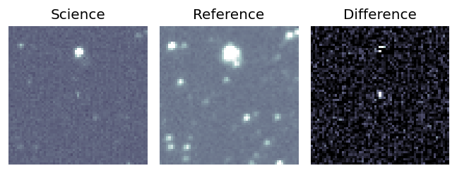
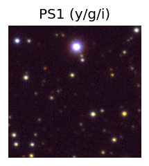
TESS: Sectors 80
PS1: 1 source in 3 arcsec Closest: d = 1.67 arcsec photoz=0.03+/-0.12 peak abs mag = -19.78
LegacySurvey: 0 sources in 3 arcsec
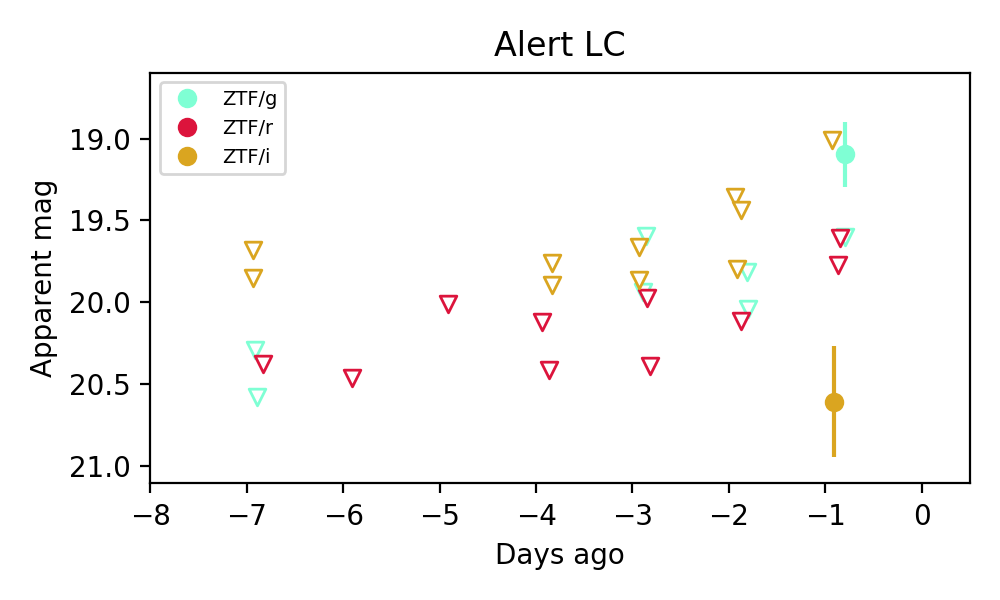
Extinction-corrected gr color:
From alerts: -1.63 +/- 99 mag
Extinction-corrected gi color:
From alerts: -2.99 +/- 0.4 mag
Extinction-corrected ri color:
From alerts: -1.35 +/- 99 mag
Rise Rate:
g: 0.94 mag/day
Fade Rate:
2. [ZTF] ZTF26abjwgcv (Afterglow?) [Back to Top] [Share] [Trigger Swift] [Fritz Alert] [Fritz Source] [Lasair]RA, Dec: 321.03956, 37.77022 21h24m9.50s, 37d46m12.81sGalactic (l, b): 83.95347, -8.95027 ext(g-r) = 0.261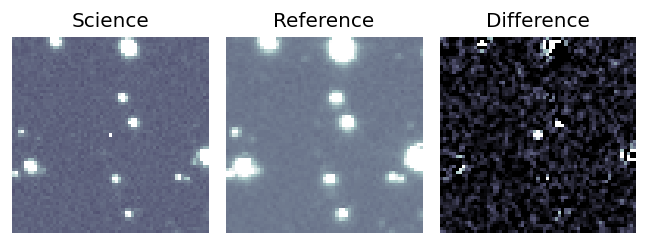
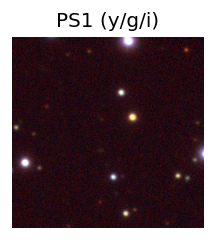
TESS: Sectors [ 15 55 56 75 76 82 83 121]
PS1: 1 source in 3 arcsec Closest: d = 4.33 arcsec photoz=0.54+/-0.10 peak abs mag = -22.95
LegacySurvey: 0 sources in 3 arcsec
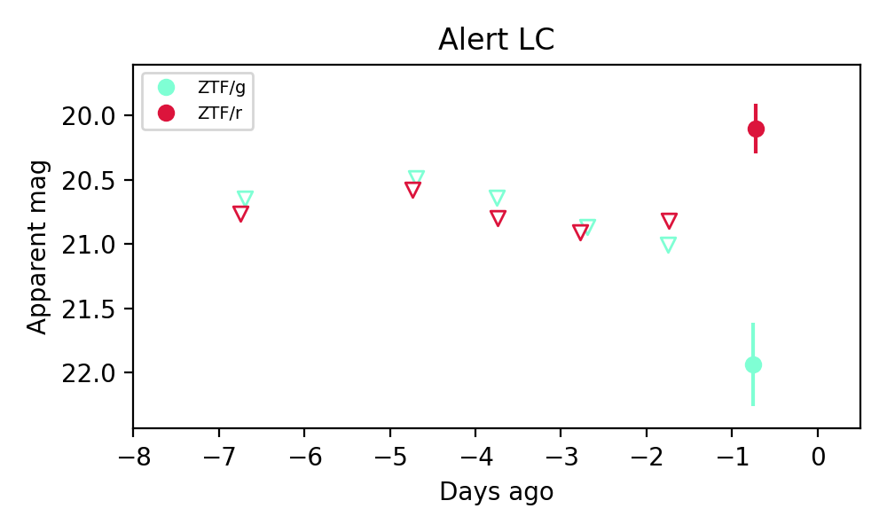
Extinction-corrected gr color:
From alerts: 1.57 +/- 0.38 mag
Consistent with synchrotron, g-r>0!
Rise Rate:
r: 0.7 mag/day
Fade Rate:
3. [ZTF] ZTF26abjyahr (Afterglow?) [Back to Top] [Share] [Trigger Swift] [Fritz Alert] [Fritz Source] [Lasair]RA, Dec: 4.28755, 0.35531 0h17m9.01s, 0d21m19.11sGalactic (l, b): 104.8463, -61.30665 WARNING: -1.38 deg from ecliptic plane ext(g-r) = 0.025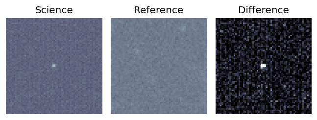
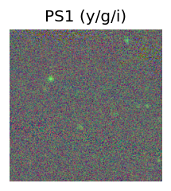
TESS: Sectors [42 70]
SDSS (<15 kpc):Found SDSS phot-z: z=0.30; peak abs mag = -21.64
PS1: 0 sources in 3 arcsec
LegacySurvey: 1 sources in 3 arcsec Closest: d = 9.32 arcsec, 163.8 deg (east of north) photoz=0.53 (68% bounds 0.45, 0.59), type=REX peak abs mag = -23.06 (68% bounds -22.63, -23.36)
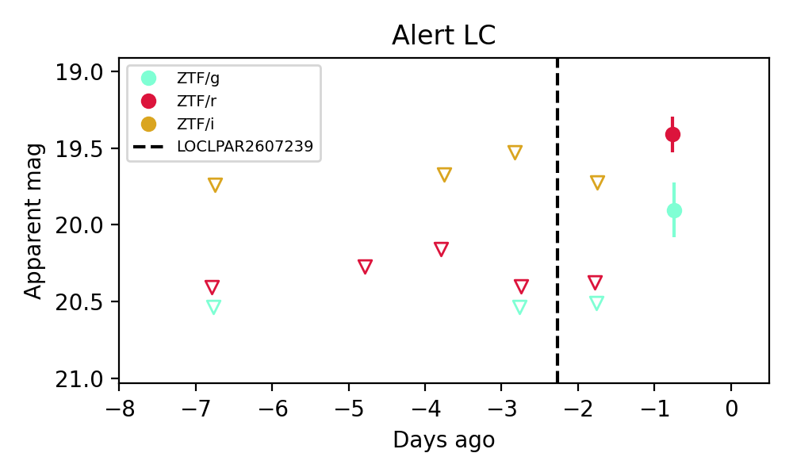
Extinction-corrected gr color:
From alerts: 0.47 +/- 0.21 mag
Consistent with synchrotron, g-r>0!
Rise Rate:
g: 0.6 mag/day
r: 0.95 mag/day
Fade Rate:
4. [ZTF] ZTF26abjzayp (FBOT?) [Back to Top] [Share] [Trigger Swift] [Fritz Alert] [Fritz Source] [Lasair]RA, Dec: 358.86904, -10.88611 23h55m28.57s, -10d-53m-9.99sGalactic (l, b): 81.2268, -69.0933 ext(g-r) = 0.037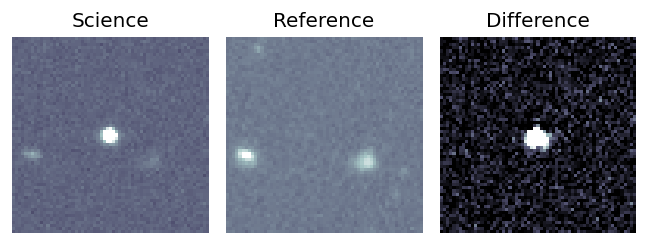
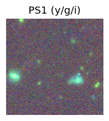
TESS: Sectors [ 2 29 42 69 70 92 107]
PS1: 0 sources in 3 arcsec
LegacySurvey: 1 sources in 3 arcsec Closest: d = 1.14 arcsec, 60.8 deg (east of north) photoz=0.52 (68% bounds 0.44, 0.69), type=PSF peak abs mag = -26.68 (68% bounds -26.27, -27.45)
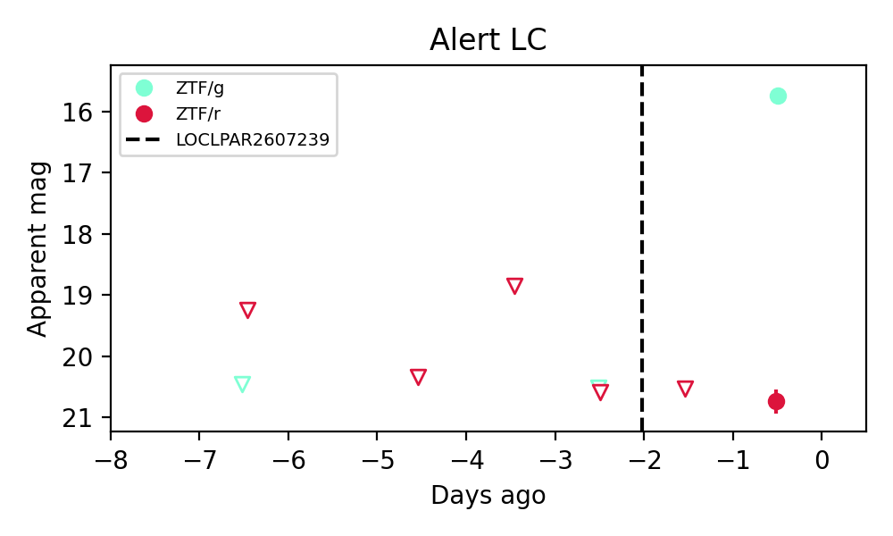
Extinction-corrected gr color:
From alerts: -5.03 +/- 0.2 mag
Rise Rate:
g: 2.36 mag/day
Fade Rate:
Section 2: Older Sources Observed Last Night (23)
0. [ZTF] ZTF26abhycxx (FBOT?) [Back to Top] [Share] [Trigger Swift] [Fritz Alert] [Fritz Source] [Lasair]RA, Dec: 280.99357, 24.37805 18h43m58.46s, 24d22m40.97sGalactic (l, b): 54.17126, 12.39233 ext(g-r) = 0.127


TESS: Sectors [ 26 40 53 54 80 118 119]
PS1: 1 source in 3 arcsec Closest: d = 8.74 arcsec photoz=0.42+/-0.06 peak abs mag = -25.66
LegacySurvey: 0 sources in 3 arcsec

Extinction-corrected gr color:
From alerts: -0.37 +/- 0.06 mag
Rise Rate:
g: 2.02 mag/day
r: 2.04 mag/day
Fade Rate:
g: 0.08 mag/day
r: 0.09 mag/day
1. [ZTF] ZTF26abhzfgq (Afterglow?) [Back to Top] [Share] [Trigger Swift] [Fritz Alert] [Fritz Source] [Lasair]RA, Dec: 227.65557, 8.68403 15h10m37.34s, 8d41m2.49sGalactic (l, b): 10.24869, 52.30866 ext(g-r) = 0.039

TESS: Sectors 51
SDSS (<15 kpc):Found SDSS phot-z: z=0.64; peak abs mag = -25.57
PS1: 0 sources in 3 arcsec
LegacySurvey: 1 sources in 3 arcsec Closest: d = 3.87 arcsec, 247.3 deg (east of north) photoz=0.73 (68% bounds 0.5, 1.05), type=REX peak abs mag = -25.76 (68% bounds -24.78, -26.74)

Extinction-corrected gr color:
From alerts: -0.35 +/- 0.1 mag
Extinction-corrected gi color:
From alerts: 0.47 +/- 99 mag
Extinction-corrected ri color:
From alerts: 0.17 +/- 99 mag
Rise Rate:
g: 0.98 mag/day
r: 0.84 mag/day
i: 0.61 mag/day
Fade Rate:
i: 0.97 mag/day
2. [ZTF] ZTF26abipuax (FBOT?) [Back to Top] [Share] [Trigger Swift] [Fritz Alert] [Fritz Source] [Lasair]RA, Dec: 278.37724, 21.28714 18h33m30.54s, 21d17m13.69sGalactic (l, b): 50.26407, 13.31759 ext(g-r) = 0.23


TESS: Sectors [ 26 40 53 80 118 119]
SDSS (<15 kpc):Found SDSS phot-z: z=0.12; peak abs mag = -19.91
PS1: 1 source in 3 arcsec Closest: d = 0.67 arcsec photoz=0.18+/-0.01 peak abs mag = -20.97
LegacySurvey: 0 sources in 3 arcsec

Extinction-corrected gr color:
From alerts: -0.18 +/- 0.19 mag
Consistent with synchrotron, g-r>0!
Rise Rate:
g: 0.31 mag/day
r: 0.33 mag/day
Fade Rate:
3. [ZTF] ZTF26abiwcvm (Afterglow?FBOT?) [Back to Top] [Share] [Trigger Swift] [Fritz Alert] [Fritz Source] [Lasair]RA, Dec: 290.2152, -1.75984 19h20m51.65s, -1d-45m-35.43sGalactic (l, b): 34.72425, -7.34791 ext(g-r) = 0.704

TESS: Sectors [54 80]
PS1: 1 source in 3 arcsec Closest: d = 0.80 arcsec photoz=0.48+/-0.83 peak abs mag = -24.19
LegacySurvey: 0 sources in 3 arcsec

Extinction-corrected gr color:
From alerts: -0.16 +/- 0.29 mag
Extinction-corrected gi color:
From alerts: -0.58 +/- 0.28 mag
Extinction-corrected ri color:
From alerts: -0.42 +/- 0.2 mag
Consistent with synchrotron, g-r>0!
Rise Rate:
g: 0.28 mag/day
r: 0.61 mag/day
i: 0.27 mag/day
Fade Rate:
i: 0.13 mag/day
4. [ZTF] ZTF26abjcerp (Afterglow?) [Back to Top] [Share] [Trigger Swift] [Fritz Alert] [Fritz Source] [Lasair]RA, Dec: 290.95399, -0.43753 19h23m48.96s, 0d-26m-15.11sGalactic (l, b): 36.25061, -7.39993 ext(g-r) = 0.355

TESS: Sectors [54 81]
PS1: 0 sources in 3 arcsec
LegacySurvey: 0 sources in 3 arcsec

Extinction-corrected gr color:
From alerts: -0.11 +/- 0.09 mag
Extinction-corrected gi color:
From alerts: -0.49 +/- 0.14 mag
Extinction-corrected ri color:
From alerts: -0.44 +/- 0.09 mag
Rise Rate:
g: 2.53 mag/day
r: 2.25 mag/day
i: 1.75 mag/day
Fade Rate:
g: 0.22 mag/day
i: 0.22 mag/day
5. [ZTF] ZTF18adnomkx (Afterglow?) [Back to Top] [Share] [Trigger Swift] [Fritz Alert] [Fritz Source] [Lasair]RA, Dec: 290.74522, 22.65719 19h22m58.85s, 22d39m25.87sGalactic (l, b): 56.59558, 3.61037 ext(g-r) = 1.233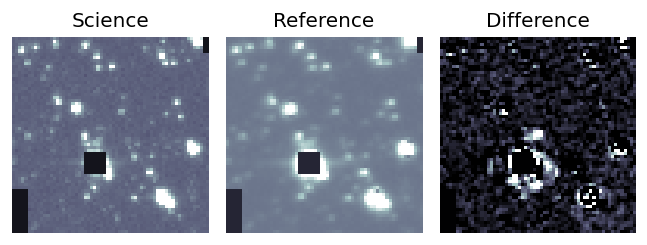
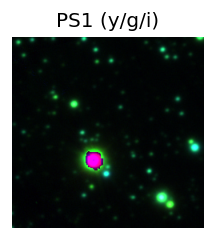
TESS: Sectors [ 14 40 54 81 119]
PS1: 0 sources in 3 arcsec
LegacySurvey: 0 sources in 3 arcsec
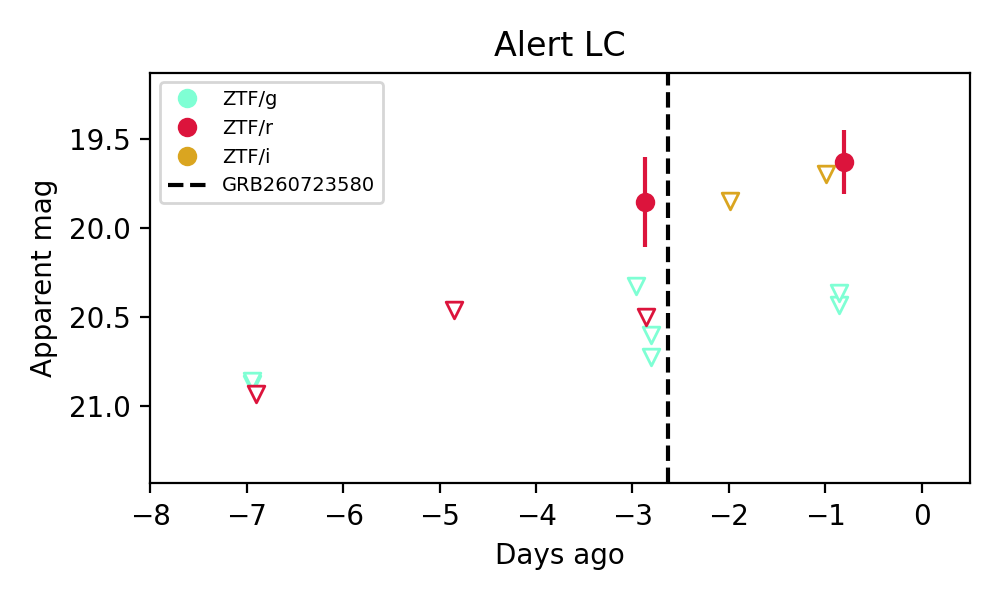
Extinction-corrected gr color:
From alerts: -0.43 +/- 99 mag
Extinction-corrected ri color:
From alerts: -0.74 +/- 99 mag
Rise Rate:
r: 0.42 mag/day
Fade Rate:
r: 37.7 mag/day
6. [ZTF] ZTF25abqyfsu (FBOT?) [Back to Top] [Share] [Trigger Swift] [Fritz Alert] [Fritz Source] [Lasair]RA, Dec: 18.64148, -11.35226 1h14m33.96s, -11d-21m-8.15sGalactic (l, b): 143.05297, -73.314 ext(g-r) = 0.03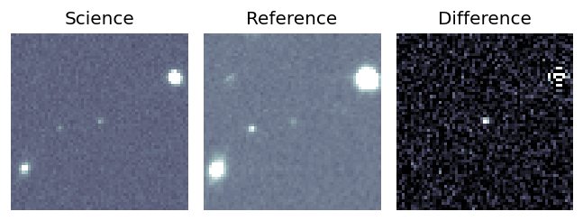
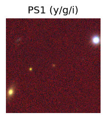
TESS: Sectors 108
PS1: 0 sources in 3 arcsec
LegacySurvey: 1 sources in 3 arcsec Closest: d = 0.30 arcsec, 169.2 deg (east of north) photoz=0.82 (68% bounds 0.74, 0.9), type=REX peak abs mag = -23.43 (68% bounds -23.17, -23.68)
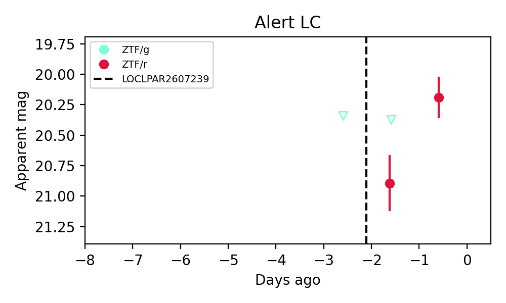
Extinction-corrected gr color:
From alerts: -0.55 +/- 99 mag
Rise Rate:
r: 0.69 mag/day
Fade Rate:
7. [ZTF] ZTF26abjsvii (Afterglow?) [Back to Top] [Share] [Trigger Swift] [Fritz Alert] [Fritz Source] [Lasair]RA, Dec: 292.23235, 33.95297 19h28m55.76s, 33d57m10.69sGalactic (l, b): 67.25002, 7.72644 ext(g-r) = 0.201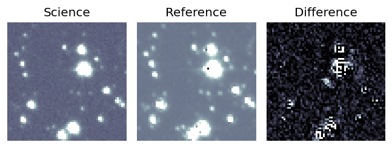
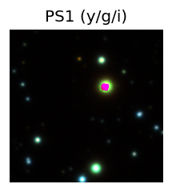
TESS: Sectors [ 14 40 41 54 74 75 81 119 120]
PS1: 1 source in 3 arcsec Closest: d = 4.10 arcsec photoz=0.51+/-0.10 peak abs mag = -24.98
LegacySurvey: 0 sources in 3 arcsec
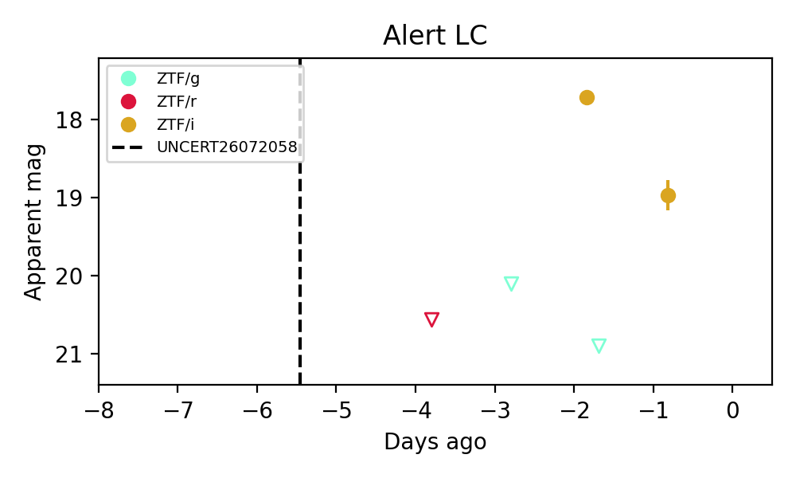
Extinction-corrected gi color:
From alerts: 2.87 +/- 99 mag
Rise Rate:
Fade Rate:
i: 1.22 mag/day
8. [ZTF] ZTF26abjsyuh (FBOT?) [Back to Top] [Share] [Trigger Swift] [Fritz Alert] [Fritz Source] [Lasair]RA, Dec: 307.69353, 1.81803 20h30m46.45s, 1d49m4.92sGalactic (l, b): 46.54413, -21.04696 ext(g-r) = 0.13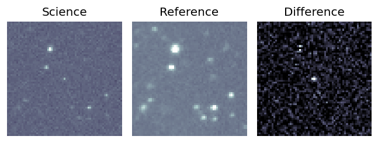
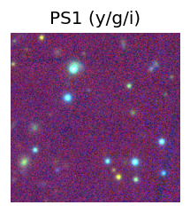
TESS: Sectors [54 81]
PS1: 0 sources in 3 arcsec
LegacySurvey: 1 sources in 3 arcsec Closest: d = 1.56 arcsec, 315.6 deg (east of north) photoz=0.77 (68% bounds 0.6, 0.89), type=PSF peak abs mag = -24.11 (68% bounds -23.46, -24.51)
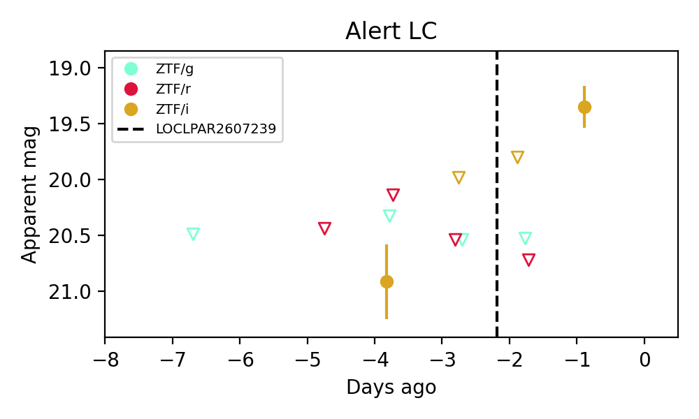
Extinction-corrected gi color:
From alerts: -0.79 +/- 99 mag
Extinction-corrected ri color:
From alerts: -0.84 +/- 99 mag
Rise Rate:
i: 0.53 mag/day
Fade Rate:
9. [ZTF] ZTF26abjtbsh (Afterglow?) [Back to Top] [Share] [Trigger Swift] [Fritz Alert] [Fritz Source] [Lasair]RA, Dec: 291.04364, 10.79901 19h24m10.47s, 10d47m56.44sGalactic (l, b): 46.26962, -2.23601 ext(g-r) = 2.292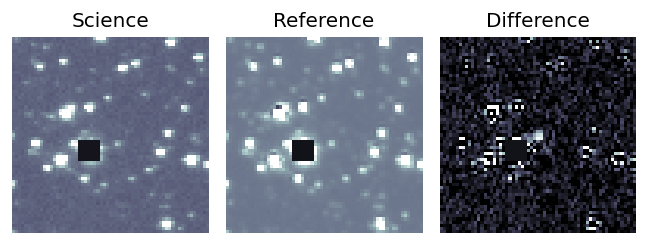
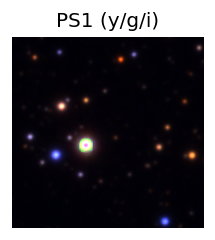
TESS: Sectors [54 81]
PS1: 0 sources in 3 arcsec
LegacySurvey: 0 sources in 3 arcsec
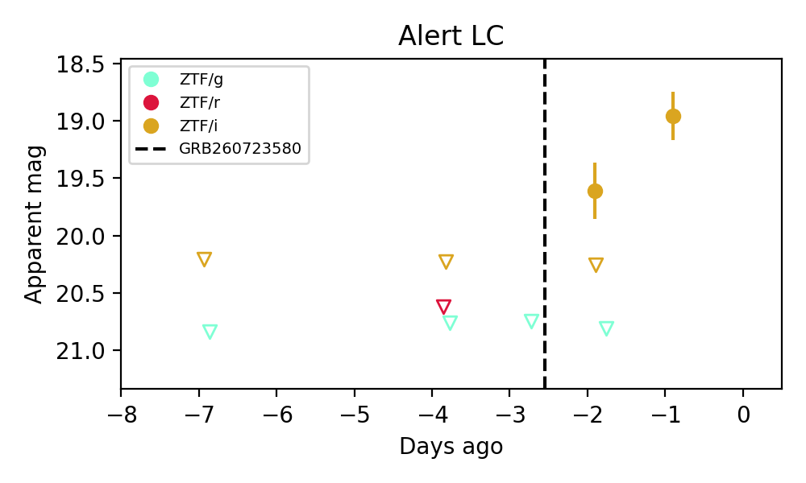
Extinction-corrected gi color:
From alerts: -2.33 +/- 99 mag
Rise Rate:
i: 1.3 mag/day
Fade Rate:
i: 42.18 mag/day
10. [ZTF] ZTF26abjukvl (FBOT?) [Back to Top] [Share] [Trigger Swift] [Fritz Alert] [Fritz Source] [Lasair]RA, Dec: 331.17656, -0.18984 22h 4m42.38s, 0d-11m-23.43sGalactic (l, b): 59.84692, -41.77313 ext(g-r) = 0.072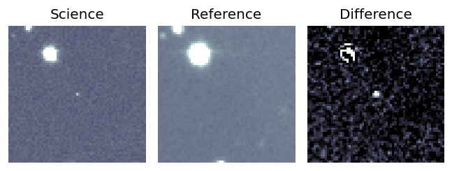
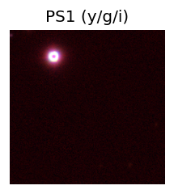
TESS: Sectors [42 55 82 92]
PS1: 0 sources in 3 arcsec
LegacySurvey: 1 sources in 3 arcsec Closest: d = 0.80 arcsec, 77.1 deg (east of north) photoz=0.87 (68% bounds 0.58, 1.47), type=PSF peak abs mag = -24.68 (68% bounds -23.6, -26.08)
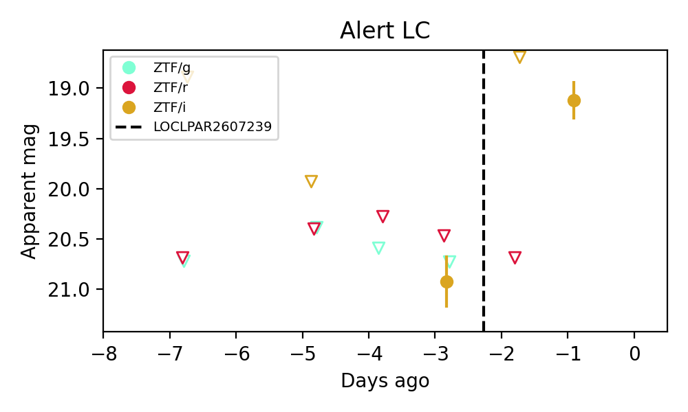
Extinction-corrected gi color:
From alerts: -0.31 +/- 99 mag
Extinction-corrected ri color:
From alerts: -0.49 +/- 99 mag
Rise Rate:
i: 0.94 mag/day
Fade Rate:
11. [ZTF] ZTF26abjurwu (FBOT?) [Back to Top] [Share] [Trigger Swift] [Fritz Alert] [Fritz Source] [Lasair]RA, Dec: 286.2653, -19.07739 19h 5m3.67s, -19d-4m-38.60sGalactic (l, b): 17.22592, -11.47874 WARNING: 3.5 deg from ecliptic plane ext(g-r) = 0.216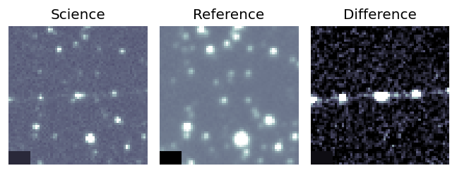
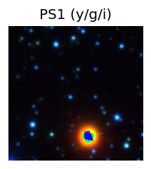
TESS: Sectors [ 92 116]
PS1: 1 source in 3 arcsec Closest: d = 3.07 arcsec photoz=0.27+/-0.02 peak abs mag = -24.50
LegacySurvey: 0 sources in 3 arcsec
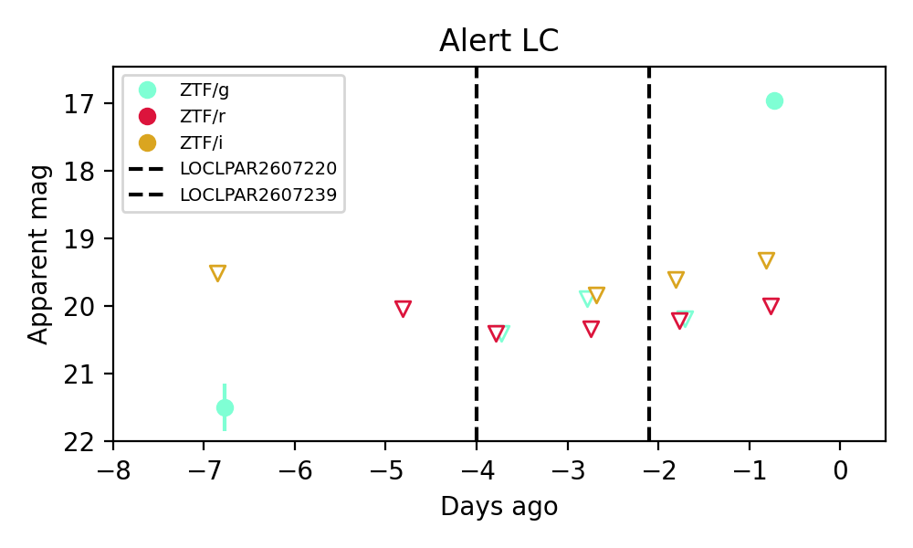
Extinction-corrected gr color:
From alerts: -3.27 +/- 99 mag
Extinction-corrected gi color:
From alerts: -2.71 +/- 99 mag
Rise Rate:
g: 3.27 mag/day
Fade Rate:
12. [ZTF] ZTF26abjvjzf (Afterglow?) [Back to Top] [Share] [Trigger Swift] [Fritz Alert] [Fritz Source] [Lasair]RA, Dec: 348.62038, -7.67676 23h14m28.89s, -7d-40m-36.33sGalactic (l, b): 68.70678, -59.90164 WARNING: -2.57 deg from ecliptic plane ext(g-r) = 0.039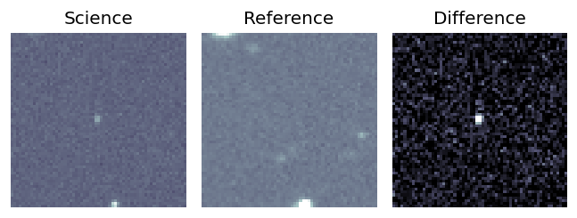
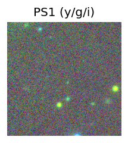
TESS: Sectors [42 70 92]
PS1: 0 sources in 3 arcsec
LegacySurvey: 1 sources in 3 arcsec Closest: d = 3.00 arcsec, 213.2 deg (east of north) photoz=0.7 (68% bounds 0.52, 2.58), type=PSF peak abs mag = -26.91 (68% bounds -26.1, -30.37)
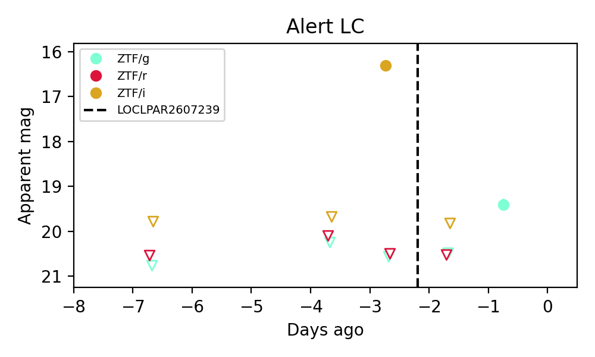
Extinction-corrected gi color:
From alerts: 4.18 +/- 99 mag
Extinction-corrected ri color:
From alerts: 4.15 +/- 99 mag
Rise Rate:
g: 1.15 mag/day
i: 3.66 mag/day
Fade Rate:
i: 3.24 mag/day
13. [ZTF] ZTF26abjvkoa (Afterglow?) [Back to Top] [Share] [Trigger Swift] [Fritz Alert] [Fritz Source] [Lasair]RA, Dec: 333.77166, 64.69228 22h15m5.20s, 64d41m32.22sGalactic (l, b): 107.18481, 6.71447 ext(g-r) = 1.007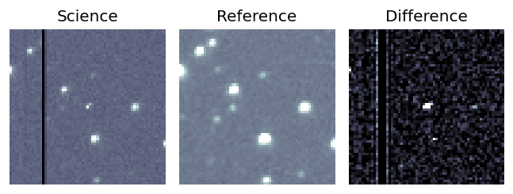
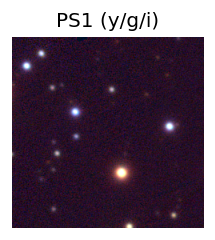
TESS: Sectors [16 18 24 57 58 77 78 84 85]
PS1: 0 sources in 3 arcsec
LegacySurvey: 0 sources in 3 arcsec
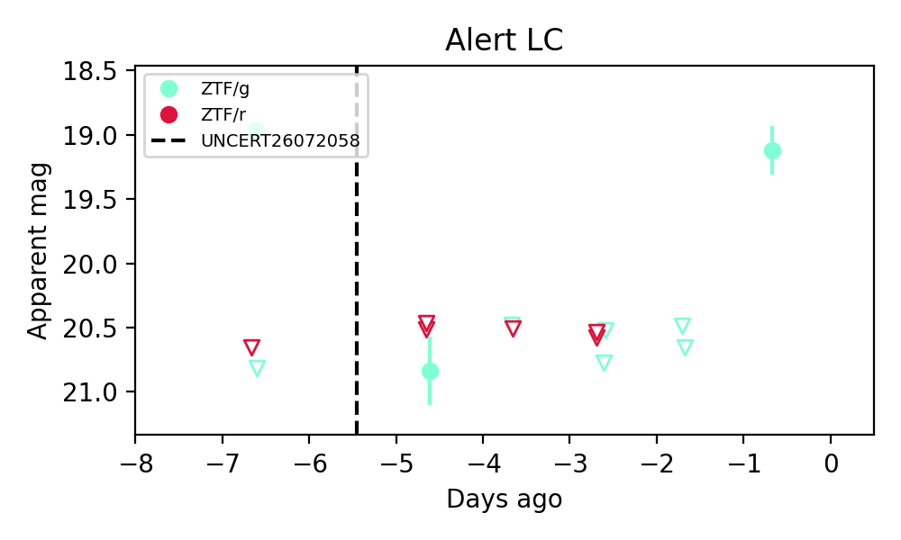
Extinction-corrected gr color:
From alerts: -0.68 +/- 99 mag
Rise Rate:
g: 1.53 mag/day
Fade Rate:
g: 0.52 mag/day
14. [ZTF] ZTF26abjvvqx (Afterglow?) [Back to Top] [Share] [Trigger Swift] [Fritz Alert] [Fritz Source] [Lasair]RA, Dec: 298.82882, 4.15616 19h55m18.92s, 4d 9m22.19sGalactic (l, b): 44.11814, -12.19062 ext(g-r) = 0.146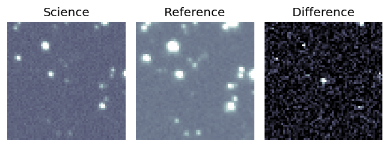
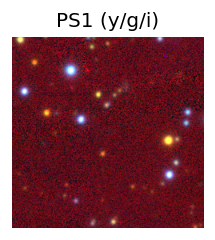
TESS: Sectors [54 81]
PS1: 0 sources in 3 arcsec
LegacySurvey: 0 sources in 3 arcsec
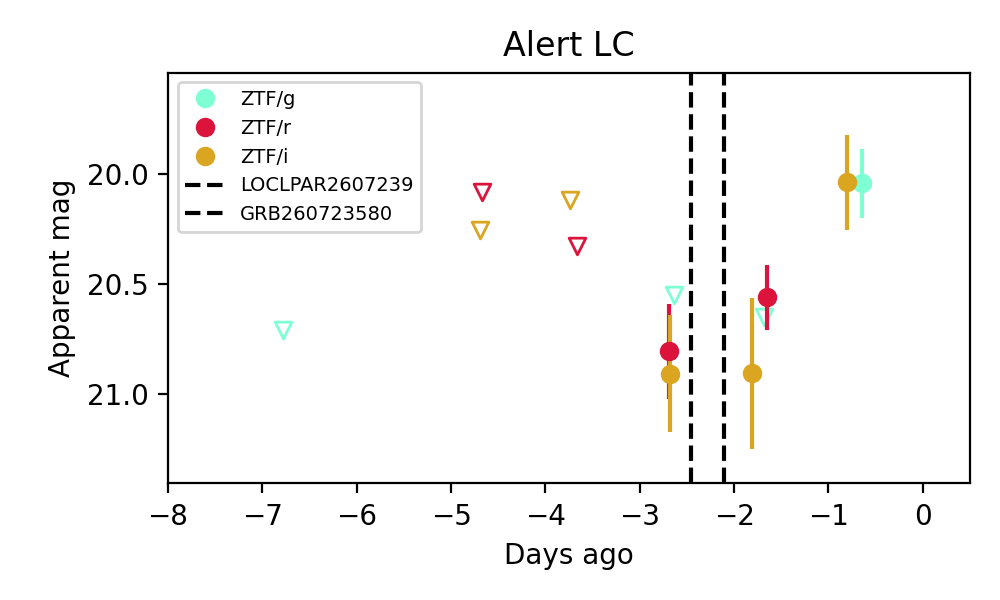
Extinction-corrected gr color:
From alerts: -0.05 +/- 99 mag
Extinction-corrected gi color:
From alerts: -0.22 +/- 0.27 mag
Extinction-corrected ri color:
From alerts: -0.43 +/- 0.37 mag
Consistent with synchrotron, g-r>0!
Rise Rate:
g: 0.59 mag/day
i: 0.49 mag/day
Fade Rate:
15. [ZTF] ZTF26abjvwlf (FBOT?) [Back to Top] [Share] [Trigger Swift] [Fritz Alert] [Fritz Source] [Lasair]RA, Dec: 308.46873, 3.41052 20h33m52.49s, 3d24m37.88sGalactic (l, b): 48.43479, -20.90829 ext(g-r) = 0.087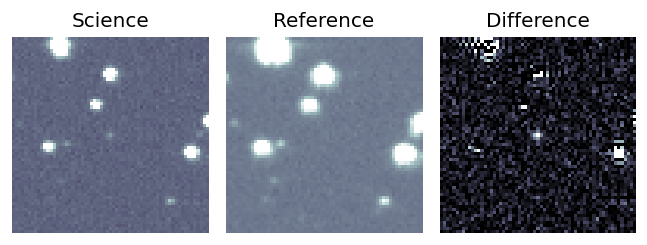
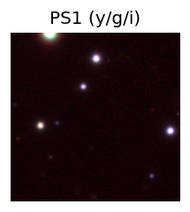
TESS: Sectors [54 81]
PS1: 0 sources in 3 arcsec
LegacySurvey: 1 sources in 3 arcsec Closest: d = 0.21 arcsec, 242.0 deg (east of north) photoz=0.46 (68% bounds 0.3, 0.57), type=REX peak abs mag = -21.82 (68% bounds -20.77, -22.42)
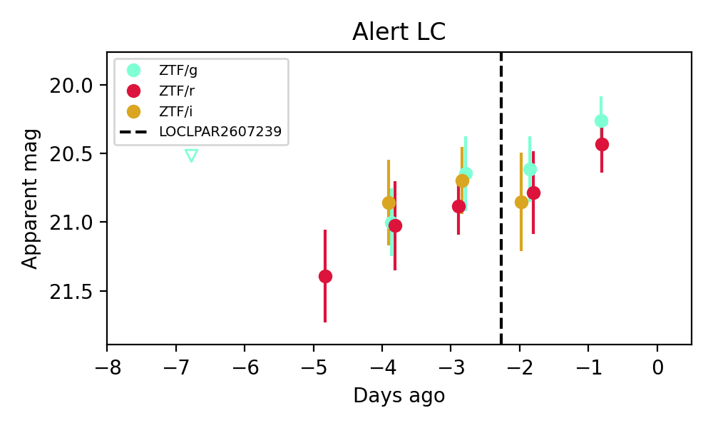
Extinction-corrected gr color:
From alerts: -0.26 +/- 0.27 mag
Extinction-corrected gi color:
From alerts: 0.61 +/- 99 mag
Extinction-corrected ri color:
From alerts: 0.86 +/- 99 mag
Consistent with synchrotron, g-r>0!
Rise Rate:
g: 0.23 mag/day
r: 0.22 mag/day
Fade Rate:
16. [ZTF] ZTF26abjwkhi (FBOT?) [Back to Top] [Share] [Trigger Swift] [Fritz Alert] [Fritz Source] [Lasair]RA, Dec: 327.46155, 49.11844 21h49m50.77s, 49d 7m6.39sGalactic (l, b): 95.09427, -3.68451 ext(g-r) = 0.465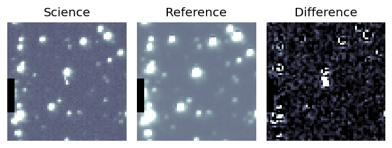
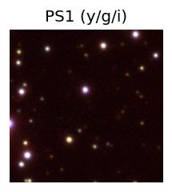
TESS: Sectors [ 16 56 76 77 83 84 121]
SDSS (<15 kpc):Found SDSS phot-z: z=0.34; peak abs mag = -24.12
PS1: 1 source in 3 arcsec Closest: d = 1.22 arcsec photoz=0.79+/-0.23 peak abs mag = -26.34
LegacySurvey: 0 sources in 3 arcsec
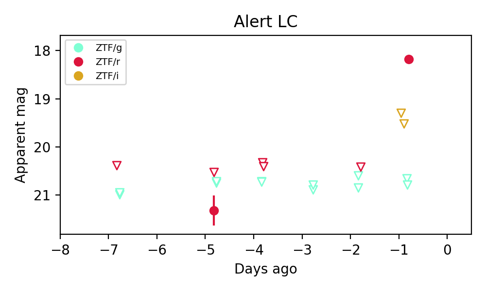
Extinction-corrected gr color:
From alerts: 2.15 +/- 99 mag
Extinction-corrected ri color:
From alerts: -1.59 +/- 99 mag
Rise Rate:
r: 2.24 mag/day
Fade Rate:
17. [ZTF] ZTF26abjxeqb (FBOT?) [Back to Top] [Share] [Trigger Swift] [Fritz Alert] [Fritz Source] [Lasair]RA, Dec: 317.45719, 4.37485 21h 9m49.73s, 4d22m29.46sGalactic (l, b): 54.59741, -27.97521 ext(g-r) = 0.107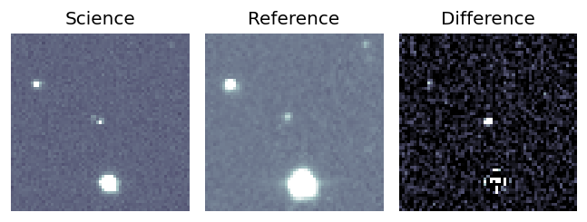
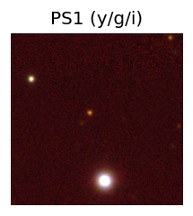
TESS: Sectors [55 82]
SDSS (<15 kpc):Found SDSS phot-z: z=0.92; peak abs mag = -24.70
PS1: 0 sources in 3 arcsec
LegacySurvey: 1 sources in 3 arcsec Closest: d = 3.08 arcsec, 56.5 deg (east of north) photoz=0.29 (68% bounds 0.08, 1.22), type=PSF peak abs mag = -21.49 (68% bounds -18.38, -25.23)
Extinction-corrected gr color:
From alerts: 0.69 +/- 99 mag
Extinction-corrected gi color:
From alerts: -0.98 +/- 99 mag
Extinction-corrected ri color:
From alerts: 0.09 +/- 99 mag
Rise Rate:
r: 1.14 mag/day
Fade Rate:
18. [ZTF] ZTF26abjxjry (FBOT?) [Back to Top] [Share] [Trigger Swift] [Fritz Alert] [Fritz Source] [Lasair]RA, Dec: 357.13218, 5.89043 23h48m31.72s, 5d53m25.55sGalactic (l, b): 95.8774, -53.64408 ext(g-r) = 0.105
TESS: Sectors [42 70]
SDSS (<15 kpc):Found SDSS phot-z: z=0.46; peak abs mag = -22.38
PS1: 0 sources in 3 arcsec
LegacySurvey: 1 sources in 3 arcsec Closest: d = 4.58 arcsec, 279.7 deg (east of north) photoz=0.17 (68% bounds 0.06, 0.64), type=PSF peak abs mag = -19.76 (68% bounds -17.14, -23.02)
Extinction-corrected gr color:
From alerts: 0.27 +/- 99 mag
Extinction-corrected ri color:
From alerts: 0.79 +/- 99 mag
Rise Rate:
r: 0.73 mag/day
Fade Rate:
19. [ZTF] ZTF26abjxmfp (Afterglow?) [Back to Top] [Share] [Trigger Swift] [Fritz Alert] [Fritz Source] [Lasair]RA, Dec: 340.6234, 60.92414 22h42m29.61s, 60d55m26.90sGalactic (l, b): 107.89996, 1.87286 ext(g-r) = 1.735
TESS: Sectors [16 17 24 57 58 77 78 84 85]
PS1: 0 sources in 3 arcsec
LegacySurvey: 0 sources in 3 arcsec
Extinction-corrected gr color:
From alerts: -0.29 +/- 99 mag
Rise Rate:
g: 0.17 mag/day
r: 0.7 mag/day
Fade Rate:
g: 0.29 mag/day
20. [ZTF] ZTF26abjxukr (Afterglow?) [Back to Top] [Share] [Trigger Swift] [Fritz Alert] [Fritz Source] [Lasair]RA, Dec: 357.5095, -8.61528 23h50m2.28s, -8d-36m-55.01sGalactic (l, b): 81.96523, -66.47147 ext(g-r) = 0.034
TESS: Sectors [ 2 29 42 70 92]
SDSS (<15 kpc):Found SDSS phot-z: z=0.27; peak abs mag = -20.98
PS1: 0 sources in 3 arcsec
LegacySurvey: 1 sources in 3 arcsec Closest: d = 3.79 arcsec, 239.8 deg (east of north) photoz=1.09 (68% bounds 0.6, 1.94), type=PSF peak abs mag = -24.56 (68% bounds -22.97, -26.09)
Rise Rate:
r: 0.57 mag/day
Fade Rate:
r: 0.4 mag/day
21. [ZTF] ZTF26abjxvwl (FBOT?) [Back to Top] [Share] [Trigger Swift] [Fritz Alert] [Fritz Source] [Lasair]RA, Dec: 351.2496, -0.45677 23h24m59.90s, 0d-27m-24.37sGalactic (l, b): 81.47073, -56.20596 WARNING: 3.05 deg from ecliptic plane ext(g-r) = 0.045
TESS: Sectors [42 70 92]
PS1: 0 sources in 3 arcsec
LegacySurvey: 1 sources in 3 arcsec Closest: d = 1.21 arcsec, 230.8 deg (east of north) photoz=1.11 (68% bounds 0.93, 1.43), type=PSF peak abs mag = -27.26 (68% bounds -26.8, -27.94)
Extinction-corrected gr color:
From alerts: 3.01 +/- 99 mag
Extinction-corrected gi color:
From alerts: 1.76 +/- 99 mag
Extinction-corrected ri color:
From alerts: -1.91 +/- 99 mag
Rise Rate:
r: 3.37 mag/day
Fade Rate:
22. [ZTF] ZTF26abjyfjg (Afterglow?) [Back to Top] [Share] [Trigger Swift] [Fritz Alert] [Fritz Source] [Lasair]RA, Dec: 17.59175, -9.56892 1h10m22.02s, -9d-34m-8.12sGalactic (l, b): 138.09639, -71.88113 ext(g-r) = 0.062

TESS: Sectors [ 3 30 97]
PS1: 0 sources in 3 arcsec
LegacySurvey: 1 sources in 3 arcsec Closest: d = 4.61 arcsec, 314.6 deg (east of north) photoz=0.6 (68% bounds 0.28, 2.0), type=REX peak abs mag = -23.75 (68% bounds -21.76, -26.95)

Extinction-corrected gr color:
From alerts: 0.04 +/- 0.12 mag
Extinction-corrected gi color:
From alerts: -0.52 +/- 0.4 mag
Extinction-corrected ri color:
From alerts: -0.2 +/- 0.45 mag
Consistent with synchrotron, g-r>0!
Rise Rate:
g: 1.29 mag/day
r: 1.63 mag/day
Fade Rate: